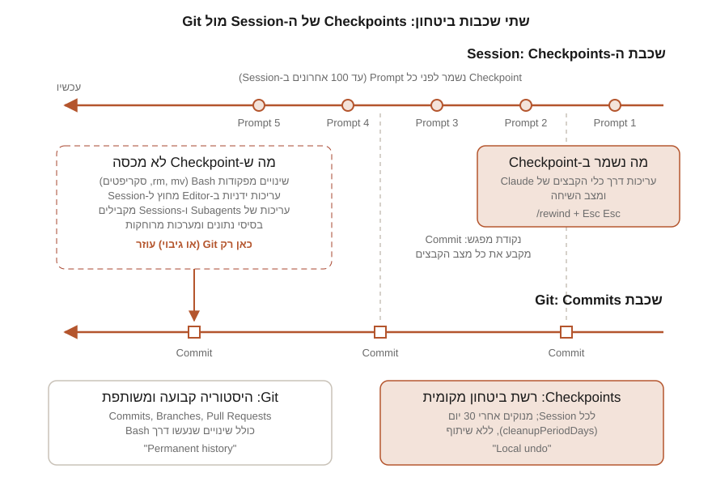

חלק ד | פרק 19
Checkpoints, Rewind ו-Recovery
גם עם מערכת הרשאות מכוונת היטב (פרק 18), לפעמים משהו משתבש: Refactoring שהרס בדיקות, כיוון שהתברר כשגוי, או שיחה שהסתבכה. בפרק הזה נלמד את רשת הביטחון המובנית של Claude Code: מנגנון ה-Checkpoints שנשמר אוטומטית לפני כל Prompt, תפריט ה-Rewind על אפשרויות השחזור והסיכום שלו, והכי חשוב: מה המנגנון הזה לא מכסה, ואיך בונים תהליך Recovery מסודר שמשלב אותו עם Git.
מהם Checkpoints ואיזו בעיה הם פותרים
Checkpointing הוא מעקב אוטומטי של Claude Code אחרי עריכות הקבצים של Claude במהלך ה-Session. לפני כל Prompt שאתם שולחים נלכד מצב הקוד, כך שאפשר לחזור אחורה במהירות אם משהו יצא משליטה. הבעיה שהמנגנון פותר היא פסיכולוגית לא פחות משהיא טכנית: בלי רשת ביטחון, מפתחים מהססים לתת ל-Agent משימות רחבות ושאפתניות. עם Checkpoints, ניסוי שנכשל הוא לא אסון אלא /rewind אחד.
העובדות המתועדות על יצירת ה-Checkpoints:
- כל Prompt של המשתמש יוצר Checkpoint חדש. הלכידה אוטומטית; אין פקודת "צור Checkpoint" ידנית.
- תקרה של 100: Claude Code שומר צילומי קבצים (Snapshots) עבור 100 ה-Checkpoints האחרונים ב-Session. כשה-Checkpoint הישן נזרק, קובצי ה-Snapshot שאינם נחוצים עוד נמחקים, מלבד ה-Snapshot הראשון של כל קובץ, שמשמש את הרחבת VS Code כבסיס להשוואות ה-Diff של ה-Session.
- נשמרים עם השיחה: ה-Checkpoints נשמרים יחד עם השיחה, כך שגם Session שחזרתם אליו עם
/resumeיכול לבצע/rewindאליהם. - ניקוי אוטומטי: הם מנוקים יחד עם ה-Sessions אחרי 30 יום, וזמן זה ניתן לשינוי דרך ההגדרה
cleanupPeriodDays(פרק 17).
הפרק מניח היכרות בסיסית עם Git ועם זרימת העבודה מפרק 13, ועם מצבי ההרשאות מפרק 18. לתרגול נשתמש שוב בפרויקט TaskFlow מפרק 3; כל פרויקט תרגול אחר תחת Git יעבוד באותה מידה.
מתי להשתמש ומתי לא
התיעוד מונה ארבעה תרחישים שבהם ה-Checkpoints מצטיינים, וכדאי לאמץ אותם כהרגלי עבודה:
- בחינת חלופות: מנסים גישת מימוש אחת, משחזרים לנקודת ההתחלה, מנסים גישה שנייה, ומשווים. בלי לפחד לאבד את נקודת המוצא.
- התאוששות מטעויות: ביטול מהיר של שינויים שהכניסו Bug או שברו פונקציונליות, בלי לחטט בהיסטוריית Git באמצע עבודה.
- איטרציה על Feature: ניסויים בווריאציות מתוך ידיעה שאפשר לחזור למצב עובד.
- פינוי Context: סיכום של קטע שיחה מפורט (למשל Debugging ארוך) תוך שמירת ההנחיות המקוריות בפירוט מלא.
ומתי לא להסתמך עליהם? כשצריך היסטוריה קבועה, שיתוף עם הצוות, או ביטול של משהו שלא עבר דרך כלי הקבצים של Claude. עבודה שכללה סקריפטים, Generators או Migrations דורשת את Git ואת כלי השחזור של המערכות עצמן. נרחיב על הגבול הזה בסעיף הבא, כי הוא הלב של הפרק.
מה נשמר ומה לא
זה הסעיף החשוב בפרק. Checkpoint שומר שני דברים בלבד:
- עריכות קבצים שנעשו דרך כלי עריכת הקבצים של Claude (הכלים המובנים שעורכים וכותבים קבצים).
- את מצב השיחה, כך שאפשר לשחזר קוד, שיחה או שניהם.
ומה לא נשמר? הרשימה המתועדת ארוכה ומפתיעה חלק מהמשתמשים:
| סוג שינוי | נלכד ב-Checkpoint? | הערות |
|---|---|---|
| עריכה דרך כלי הקבצים של Claude | כן | הליבה של המנגנון |
| שינוי קבצים מפקודת Bash | לא | rm file.txt, mv old.txt new.txt, cp, סקריפטים, Generators: אי אפשר לבטל דרך Rewind |
| עריכות ידניות שלכם מחוץ ל-Session | לא | שינויים ב-Editor במקביל אינם במעקב |
| עריכות מ-Sessions מקבילים | לא | אלא אם במקרה נגעו באותם קבצים של ה-Session הנוכחי |
| עריכות של Subagents | לא | נופלות מחוץ ל-Checkpoints של ה-Session, גם כשנעשו בכלי הקבצים; החריג היחיד: Skill עם context: fork שרץ בחזית |
| קבצים דרך Symlink או Hard Link | חלקית | במעקב, אבל השחזור מדלג עליהם עם אזהרה |
| בסיסי נתונים ומערכות מרוחקות | לא | Migration שרץ, API חיצוני שנקרא, Push שנשלח: שום Rewind לא מחזיר אותם |
השילוב המצוי ביותר בפועל: Claude ערך קבצים (במעקב) וגם הריץ פקודות Bash שנגעו בקבצים (לא במעקב) באותו רצף עבודה. Rewind ישחזר רק את חלקו של הרצף, ותקבלו מצב ביניים שלא היה קיים מעולם: למשל קוד ישן לצד קובץ תצורה חדש שנוצר ב-cp. אחרי רצף מעורב כזה, השוו תמיד עם git status ו-git diff לפני שאתם ממשיכים. עוד מקרה מתועד: עריכות של Subagents, כולל ריצת /code-review --fix ברקע ו-Skills מפוצלים (Forked) שרצים ברקע, אינן משוחזרות; לביטולן השתמשו ב-Git.
תפריט ה-Rewind: /rewind ו-Esc Esc
פותחים את התפריט עם /rewind, או בלחיצה כפולה על Esc כששורת הקלט ריקה (אם יש בה טקסט, ה-Esc הכפול מנקה אותו; הטקסט נשמר בהיסטוריית הקלט ו-Up מחזיר אותו). התפריט מציג את רשימת ה-Prompts ששלחתם ב-Session; בוחרים נקודה, ואז פעולה. אלה האפשרויות המתועדות:
| אפשרות | מה היא עושה |
|---|---|
| Restore code and conversation | מחזירה גם את הקוד וגם את השיחה לנקודה שנבחרה |
| Restore conversation | מחזירה את השיחה לאותה הודעה, ומשאירה את הקוד הנוכחי |
| Restore code | מחזירה את שינויי הקבצים, ומשאירה את השיחה |
| Summarize from here | דוחסת את השיחה מהנקודה הזאת והלאה לסיכום, ומפנה מקום ב-Context Window |
| Summarize up to here | דוחסת את השיחה שלפני הנקודה לסיכום, ומשאירה את ההודעות המאוחרות במלואן |
| Never mind | חוזרת לרשימת ההודעות בלי לשנות דבר |
פרטים מתועדים שכדאי להכיר: שתי אפשרויות שחזור הקוד מופיעות רק כשל-Checkpoint הנבחר יש שינויי קבצים במעקב לשחזר; אם לא נלכדו עריכות אחרי אותה נקודה, התפריט מציע רק שחזור שיחה, סיכום ו-Never mind. אחרי שחזור שיחה או Summarize from here, ה-Prompt המקורי מההודעה שנבחרה מוחזר לשורת הקלט, מוכן לעריכה ולשליחה מחדש: זה מזמין את דפוס העבודה הנכון של "לנסח טוב יותר ולנסות שוב". ואם הרצתם /clear קודם באותה ריצה של Claude Code, בראש התפריט מופיעה שורה נוספת בנוסח /resume <session-id> (previous session) שמחזירה לשיחה שלפני הניקוי (מגרסה 2.1.191).
תוצאה צפויה ואימות: אחרי בחירה באפשרות שחזור, השיחה או הקבצים חוזרים לנקודה שבחרתם, ולא מוצגת שגיאה. אם השחזור דילג על קבצים, תופיע אזהרת Restored the code, but skipped N files (נטפל בה בהמשך הפרק). הרגל אימות מומלץ אחרי כל שחזור קוד: הריצו git status ו-git diff והשוו את מה שאתם רואים למה שציפיתם לו; זה הרגע לגלות פערים, לא אחרי עשרה Prompts נוספים.
שחזור מול סיכום
אפשרויות ה-Restore מחזירות מצב לאחור: קוד, שיחה או שניהם. אפשרויות ה-Summarize לא נוגעות בקבצים כלל; הן דוחסות חלק מהשיחה לסיכום שנוצר על ידי המודל, בדומה ל-/compact אבל ממוקד: אתם בוחרים איזה צד של ההודעה הנבחרת יידחס. Summarize from here שומר את ההקשר המוקדם במלואו ודוחס את ההמשך (מתאים למחוק דיון צדדי שהסתעף); Summarize up to here דוחס את ההתחלה ושומר את העבודה האחרונה בפירוט מלא (מתאים לדחוס דיוני הקמה ארוכים). ההודעות המקוריות נשמרות ב-Transcript של ה-Session, כך ש-Claude יכול לחזור לפרטים בעת הצורך, ובשיחה מופיע סמן Summarized conversation במקום ההודעות שנדחסו. אפשר גם לכוון את הסיכום: מסמנים אפשרות Summarize עם החיצים ומקלידים הנחיה בשדה add context (optional) לפני Enter.
סיכום משאיר אתכם באותו Session. אם המטרה היא לנסות כיוון אחר בלי לאבד את השיחה המקורית, השתמשו ב-/branch (או claude --continue --fork-session): הם יוצרים הסתעפות של השיחה ושומרים את המקור, שאפשר לחזור אליו עם /resume.
ב-VS Code, הרחבת Claude Code משתמשת ב-Snapshot הראשון של כל קובץ כבסיס להצגת ה-Diffs המצטברים של ה-Session; את פעולת ה-Rewind עצמה מבצעים דרך /rewind בממשק השיחה, בדיוק כמו ב-Terminal.
Rewind מול Git: טבלת השוואה
קל להתבלבל ולחשוב ש-Checkpoints הם "Git קטן". התיעוד עצמו מנסח את ההבחנה: חשבו על Checkpoints כעל Local Undo ועל Git כעל Permanent History. ההשוואה המלאה:
| היבט | Checkpoints / Rewind | Git |
|---|---|---|
| מה במעקב | עריכות דרך כלי הקבצים של Claude, ומצב השיחה | כל שינוי בקבצים שבמעקב, מכל מקור: כלי Claude, Bash, עריכה ידנית |
| יחידת השמירה | אוטומטית, לפני כל Prompt | מכוונת, ב-Commit שאתם (או Claude באישורכם) יוצרים |
| התמדה | עד 100 Checkpoints אחרונים ב-Session; ניקוי עם ה-Sessions אחרי 30 יום (cleanupPeriodDays) | קבועה; היסטוריה נשמרת כל עוד ה-Repository קיים |
| שיתוף | אין; מקומי ל-Session שלכם | מלא: Push, Branches, Pull Requests, עבודת צוות |
| שחזור שיחה | כן: יכול להחזיר גם את מצב השיחה | לא; Git לא יודע דבר על השיחה |
| שינויים מפקודות Bash | לא משוחזרים | משוחזרים כרגיל (אם הקבצים במעקב) |
| ייעוד | ביטול מהיר ברמת ה-Session, ניסוי בחלופות | היסטוריה קבועה, שיתוף פעולה, Releases |

המסקנה המעשית, שהתיעוד חוזר עליה במפורש: Checkpoints משלימים את ניהול הגרסאות אך אינם מחליפים אותו. המשיכו להשתמש ב-Git ל-Commits, Branches והיסטוריה ארוכת טווח, כפי שלמדנו בפרק 13. ההרגל החשוב ביותר: Commit של נקודת בסיס עובדת לפני כל משימה גדולה. ה-Commit הזה הוא מה שהופך כל תקלה, כולל אלה ש-Rewind לא מכסה, לניתנת לשחזור.
איך זה נראה ביום עבודה טיפוסי? חשבו על שלוש רזולוציות של ביטחון: ברזולוציית הדקות, ה-Checkpoints מכסים אתכם אוטומטית בין Prompt ל-Prompt. ברזולוציית אבני הדרך, אתם יוצרים Commit אחרי כל שלב שעובד: "המודל עודכן והבדיקות ירוקות", "ה-Endpoint החדש עובד". וברזולוציית השיתוף, Push ו-Pull Request מקבעים את העבודה מול הצוות. כשכל שלוש הרזולוציות פעילות, אין תרחיש תקלה שמשאיר אתכם בלי דרך חזרה: מה שה-Rewind לא מכסה, ה-Commit האחרון מכסה, ומה שנמחק מקומית קיים ב-Remote.
מגבלות לעומק
- פקודות Bash: המגבלה המרכזית, שכבר הכרנו.
rm,mv,cp, סקריפטים,npm installשמשנה אתnode_modulesו-package-lock.json: כל אלה מחוץ למעקב. - Subagents: עריכות שמחיל Subagent נופלות מחוץ ל-Checkpoints של ה-Session שלכם, גם כשהוא עורך בכלי הקבצים של Claude. החריג המתועד היחיד: Skill עם
context: forkשרץ בחזית, כי הוא עורך את עץ העבודה בתוך התור שלכם; מגרסה 2.1.218 Skill מפוצל רץ ברקע כברירת מחדל, ורקbackground: falseמחזיר אותו לחזית. - Symlinks ו-Hard Links: שחזור קוד מדלג על כל נתיב במעקב שהוא קישור, ומציג אזהרת Restored the code, but skipped N files. הקבצים המדולגים שומרים את תוכנם הנוכחי. דוגמאות מהתיעוד: קובצי תצורה שמנהל Dotfiles מקשר לפרויקט, וקבצים ש-pnpm מקשר ב-Hard Link. כדי לראות אילו נתיבים דולגו, הפעילו
/debugלפני השחזור; יומן ה-Debug ב-~/.claude/debug/<session-id>.txtמפרט כל נתיב. - עריכות חיצוניות ומקבילות: שינויים ידניים שלכם ו-Sessions אחרים שרצים במקביל אינם נלכדים בדרך כלל, אלא אם נגעו באותם קבצים שה-Session הנוכחי ערך. עבודה על אותו עץ קבצים משני Sessions היא מתכון לשחזורים מפתיעים; לזה נועדו Worktrees.
- העולם שמחוץ לקבצים: Rewind לא מבטל Migration שרץ על בסיס נתונים, Push שיצא ל-Remote, קריאת API חיצונית או הודעה שנשלחה. לכל אלה נדרשים כלי השחזור של המערכת המתאימה.
תהליך Recovery: תקרית ב-TaskFlow צעד אחר צעד
נתרגל את הכול על תקרית מציאותית. ביקשתם מ-Claude, בפרויקט ה-TaskFlow, "restructure the tasks router to support subtasks". במצב acceptEdits הוא ערך את backend/app/routers/tasks.py ואת models.py, ובאמצע גם הריץ mv backend/app/routers/tasks.py backend/app/routers/items.py ויצר קובץ חדש. עכשיו pytest נכשל עם שמונה שגיאות Import, והכיוון כולו נראה שגוי. הריצו את ה-Runbook הבא:
- עצרו והעריכו נזק.
Escעוצר את Claude מיד. אל תשלחו "תתקן את זה" בפאניקה; קודם תמונה מלאה:$ git status renamed: backend/app/routers/tasks.py -> backend/app/routers/items.py modified: backend/app/models.py untracked: backend/app/routers/subtasks.py $ git diff --statהשוו את הפלט למה שאתם זוכרים מהשיחה: אילו שינויים באו מעריכות (במעקב Checkpoint) ואילו מפקודות Bash כמו ה-mv(לא במעקב). - בחרו כלי שחזור לפי סוג הנזק. זו טבלת ההחלטה:
בתקרית שלנו יש שינוי Bash (ה-
מצב כלי השחזור הנכון רק עריכות של Claude דרך כלי הקבצים /rewindעם Restore code and conversation לנקודה שלפני ה-Prompt הבעייתיגם פקודות Bash נגעו בקבצים (כמו כאן) Git: שחזור מה-Commit האחרון של נקודת הבסיס, ואז /rewindלשיחה בלבד אם רוצים לנקות גם אותההקוד דווקא בסדר, השיחה הסתבכה Restore conversation בלבד, או Summarize from here אין Commit בסיס ו-Bash שינה קבצים שחזור ידני בעזרת git diff, ה-Transcript (Ctrl+O) ויומן הפקודות; זה התרחיש שרציתם להימנע ממנוmv), ולכן Git הוא הכלי. עשינו Commit בסיס לפני המשימה, אז השחזור בטוח ופשוט. אם עוד לא עצרתם לגמרי את הכיוון, אפשר לבקש מ-Claude עצמו לבצע את פקודות השחזור; ליתר ביטחון בצעו אותן ידנית:$ git restore --source=HEAD --staged --worktree backend/ $ git clean -fd backend/ # מסיר קבצים חדשים שאינם במעקב; בדקו קודם עם git clean -nd - אמתו שהבסיס חזר. שחזור בלי אימות הוא ניחוש:
git statusנקי (או מציג רק מה שציפיתם להשאיר).pytest backend/testsירוק כפי שהיה בנקודת הבסיס.- אין קבצים "יתומים" חדשים:
git clean -ndלא מציע דבר.
- נקו את השיחה וגשו מחדש, חכם יותר. הקוד שוחזר, אבל ה-Context עדיין מלא בכיוון השגוי, והוא ישפיע על הניסיון הבא. פתחו את
/rewindובחרו Restore conversation לנקודה שלפני הבקשה; ה-Prompt המקורי יחזור לשורת הקלט לעריכה. הפעם נסחו טוב יותר את מה שלמדתם מהכישלון, והתחילו ב-Plan Mode:Prompt משופר (אחרי מעבר ל-Plan Mode עם Shift+Tab)plan a minimal subtasks feature: keep the existing tasks router file name, add a Subtask model and a nested route. do not rename or move existing files. list every file you intend to touch before making changes
שימו לב לעיקרון הכללי שה-Runbook מדגים: קודם מעריכים (שלב 1), אחר כך בוחרים כלי לפי מה שבאמת השתנה (שלב 2), מאמתים עם בדיקות (שלב 3), ורק בסוף מנסים שוב, עם תוכנית והיקף מצומצם יותר (שלב 4). Rewind בלי אימות ובלי לקח הוא רק דחיית הכישלון הבא.
שגיאות נפוצות
- להסתמך על Rewind אחרי רצף שכלל פקודות Bash. תקבלו שחזור חלקי ומצב ביניים לא עקבי. בדקו קודם מה באמת השתנה ואיך.
- לדלג על Commit הבסיס "כי יש Checkpoints". ה-Checkpoints מוגבלים ל-100 האחרונים, נמחקים אחרי 30 יום, לא משותפים ולא מכסים Bash. נקודת הבסיס האמיתית היא Commit.
- לצפות שהתפריט יציע Restore code כשאין מה לשחזר. אם לא נלכדו עריכות אחרי הנקודה שנבחרה, אפשרויות שחזור הקוד פשוט לא מופיעות; זו התנהגות מתועדת, לא תקלה.
- לשחזר קוד ולהשאיר שיחה מזוהמת. ה-Context עם הכיוון השגוי ימשיך להשפיע. שחזרו או סכמו גם את השיחה.
- לבלבל בין Summarize ל-Restore. סיכום דוחס שיחה ולא נוגע בקבצים; שחזור מחזיר מצב. אם המטרה היא לפנות Context, סיכום; אם לבטל נזק, שחזור.
- לעבוד על אותם קבצים משני Sessions ולצפות ל-Rewind נקי. עריכות מ-Session מקביל אינן במעקב של ה-Session הנוכחי.
Troubleshooting
- "Restored the code, but skipped N files": הנתיבים המדולגים הם Symlinks או Hard Links. הפעילו
/debugושחזרו שוב כדי לקבל את רשימת הנתיבים ביומן~/.claude/debug/<session-id>.txt, ואז בטלו את השינוי בקבצים האלה ידנית או בקשו מ-Claude להפוך את העריכה. - Esc Esc לא פותח את התפריט: ודאו ששורת הקלט ריקה; כשיש בה טקסט, הלחיצה הכפולה מנקה אותו במקום לפתוח את התפריט (הטקסט שנוקה זמין עם Up).
- עשיתם /clear ומתחרטים: פתחו את
/rewindוחפשו בראש הרשימה את השורה/resume <session-id> (previous session); היא זמינה עד יציאה מהתוכנית או מעבר ל-Session אחר. בגרסאות ישנות יותר:/resumeובחירה מהרשימה. - שחזרתם אבל הקבצים לא חזרו: בדקו אם השינויים המדוברים נעשו בכלל דרך כלי הקבצים: שינויי Bash ועריכות Subagents אינם משוחזרים. ה-Transcript (
Ctrl+O) מראה בדיוק איזה כלי ביצע כל שינוי. - Session ישן בלי Checkpoints: Sessions ו-Checkpoints מנוקים אחרי 30 יום (ברירת מחדל). בדקו את
cleanupPeriodDaysבהגדרות אם אתם צריכים חלון ארוך יותר.
Security
שלוש נקודות אבטחה סביב שחזורים:
- Rewind אינו מבטל דליפות. אם סוד נכתב לקובץ, נשלח ב-Push, הודפס ל-Log או הגיע לשיחה, שחזור הקבצים לא מחזיר את הגלגל: הסוד כבר יצא. הטיפול הנכון הוא החלפת הסוד (Rotation), כפי שלמדנו בפרקי ה-Git וה-Security (פרק 20).
- שחזור אינו Undo לפעולות מרוחקות. Migration שרץ, Deployment שיצא, API שנקרא: אלה דורשים נהלי שחזור משלהם. תכננו אותם לפני הפעולה, לא אחריה.
- ה-Transcript נשמר. גם אחרי סיכום, ההודעות המקוריות נשמרות ב-Transcript של ה-Session על הדיסק. אם עבר בשיחה תוכן רגיש, זכרו שהוא קיים שם עד ניקוי ה-Sessions.
Cost ו-Context
ה-Checkpoints עצמם הם מנגנון מקומי: הלכידה לא עולה Tokens. ההשפעה הכלכלית האמיתית היא של אפשרויות ה-Summarize: הסיכום נוצר על ידי המודל (כלומר עולה Tokens חד פעמית), אבל מפנה נתח גדול מה-Context Window, וזה בדיוק הכלי כשדיון Debugging ארוך גמר לכם את המקום. גם שחזור שיחה הוא כלי חיסכון: במקום להמשיך לשלם על Context מלא בכיוון שגוי (שגם מטה את התשובות הבאות), חוזרים לנקודת פיצול נקייה. כלל אצבע: כיוון שגוי שמת, מסכמים או משחזרים; לא גוררים אותו הלאה.
Best Practices
- Commit של נקודת בסיס עובדת לפני כל משימה גדולה; זו התשתית שכל ה-Recovery נשען עליה.
- אחרי תקלה: קודם
git statusו-git diff, רק אחר כך החלטת שחזור. - השתמשו ב-Rewind לניסוי מכוון בחלופות: נסו גישה א', שחזרו, נסו גישה ב', והשוו. זה אחד השימושים שהתיעוד ממליץ עליהם במפורש.
- אחרי שחזור, הריצו את הבדיקות לפני שממשיכים; שחזור לא מאומת הוא הנחה, לא עובדה.
- כשה-Prompt המקורי חוזר לשורת הקלט אחרי שחזור שיחה, שפרו אותו לפני שליחה מחדש: הוסיפו את האילוץ שחסר בניסיון הקודם.
- ל-Sessions מקבילים על אותו פרויקט, השתמשו ב-Worktrees נפרדים כדי שה-Checkpoints לא ידרכו זה על זה.
Anti-patterns
- "Checkpoints זה כמו Git, אז לא צריך Commits". ההשוואה בטבלה למעלה מפריכה כל עמודה: תקרת 100, ניקוי אחרי 30 יום, אפס שיתוף, ואפס כיסוי ל-Bash.
- Rewind כפתרון פאניקה אוטומטי. שחזור עיוור בלי הערכת נזק עלול למחוק דווקא עבודה טובה שנעשתה אחרי הנקודה, או להשאיר חצי מהנזק (החצי של ה-Bash) במקום.
- לגרור שיחה כושלת "עוד ניסיון אחד" שוב ושוב. כל ניסיון מוסיף רעש ל-Context ומקטין את סיכויי ההצלחה. אחרי שני כישלונות באותו כיוון: שחזור שיחה ו-Prompt חדש, או
/branchלניסוי מקביל. - לתת ל-Claude להריץ פקודות שחזור Git הרסניות בלי בדיקה. פקודות כמו
git reset --hardו-git clean -fdמוחקות עבודה לא שמורה לצמיתות. בדקו קודם עםgit statusו-git clean -nd, וזכרו שב-auto mode ה-Classifier חוסם אותן כברירת מחדל בדיוק מהסיבה הזאת.
תרגיל
בעותק התרגול של TaskFlow (ודאו קודם Commit נקי):
- בקשו מ-Claude להוסיף שדה
due_dateל-models.pyולעדכן את ה-Router (עריכות דרך כלי הקבצים). - בקשו ממנו גם: "create a backup copy of models.py using cp" (שינוי דרך Bash).
- עכשיו פתחו
/rewind, בחרו את הנקודה שלפני שלב 1, ובצעו Restore code and conversation. - בדקו עם
git status: מה שוחזר ומה נשאר? הסבירו למה, ונקו את השאריות.
פתרון מוסבר
אחרי השחזור תגלו חלוקה מדויקת לפי כללי המעקב: השינויים ב-models.py וב-Router נעלמו, כי נעשו דרך כלי עריכת הקבצים של Claude והיו ב-Checkpoint. לעומת זאת, קובץ הגיבוי (למשל models.py.bak) עדיין קיים: הוא נוצר בפקודת cp דרך Bash, ושינויים כאלה אינם במעקב ה-Checkpoints ואינם משוחזרים. git status יציג אותו כקובץ לא במעקב (untracked). הניקוי בטוח כאן כי מדובר בקובץ בודד וידוע: מחקו אותו ידנית או עם git clean -f אחרי בדיקה עם git clean -n. הלקח הכפול: א. Rewind משחזר בדיוק את מה שהוא מתעד, לא יותר; ב. ההרגל להשוות ל-git status אחרי כל שחזור הוא מה שחושף את השאריות. אם תרצו הרחבה, חזרו על התרגיל כששלב 2 מוחלף ב-mv במקום cp, וראו איך נוצר מצב ביניים מסוכן יותר: הקובץ המקורי חזר דרך ה-Checkpoint, והעותק שהוזז נשאר גם הוא.
סיכום
- Checkpoint נלכד אוטומטית לפני כל Prompt; נשמרים צילומי קבצים ל-100 ה-Checkpoints האחרונים, והם מנוקים עם ה-Sessions אחרי 30 יום (
cleanupPeriodDays). - נשמרות עריכות דרך כלי הקבצים של Claude ומצב השיחה. לא נשמרים: שינויי Bash, עריכות ידניות, Sessions מקבילים, עריכות Subagents (למעט Fork בחזית), קישורים, ומערכות מרוחקות.
/rewindאוEsc Escפותחים תפריט עם שש אפשרויות: שלוש של שחזור (קוד ושיחה, שיחה, קוד), שתיים של סיכום (מכאן והלאה, עד כאן) ו-Never mind.- Rewind הוא Local Undo; Git הוא ההיסטוריה הקבועה והמשותפת. הם משלימים, לא מתחרים, ו-Commit בסיס לפני משימה גדולה הוא ההרגל שמאחד אותם.
- תהליך Recovery נכון: לעצור ולהעריך, לבחור כלי לפי סוג הנזק, לאמת עם בדיקות, ולגשת מחדש עם תוכנית ו-Prompt טובים יותר.
בפרק הבא נעלה קומה: מ-Recovery נקודתי אל תמונת האבטחה המלאה של עבודה עם Agent: מודל האיומים, Prompt Injection, ניהול סודות והגנות הארגון.
Checkpointing |
Commands (/rewind, /clear, /resume, /branch) |
Choose a permission mode |
Configure auto mode
נבדק: 28.07.2026